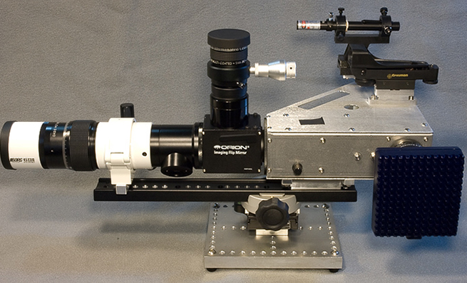
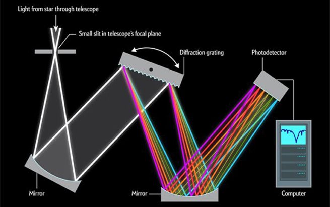

|  |
What is a spectrograph? A spectrograph is an astronomical instrument to get and record spectra.The spectrograph separates the light from objects into component colors of spectra. The spectra reveal information such as an object's composition, distance, or temperature.
|
|  |
How does it work? A spectrograph splits the light into a spectrum by using a diffraction grating. Diffraction grating is used in CD (Compact Disk) technology. A CCD (Charge-Coupled Device) camera records the spectrum and transmits the spectrum to a computer. Where the atoms "land" is recorded in a picture, a spectrum. The same substance or element will also produce the same spectrum no matter how often it is tested.
|